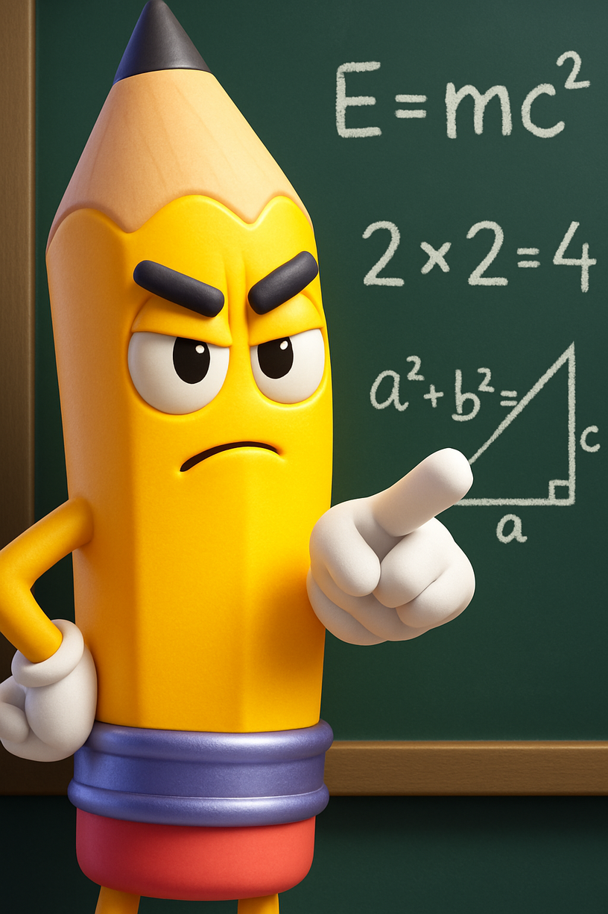

Seus Reels andam mais parados que estátua?
Cansado de passar horas editando vídeos que ninguém vê? Você posta, a trilha é boa, a ideia é legal... mas o engajamento? Zzzzzz... A frustração é real. Você sabe que seu conteúdo merece mais, mas falta aquela 'FÓRMULA SECRETA' para prender a atenção e fazer o algoritmo te amar!
- ❌ Baixo Engajamento e Poucas Visualizações
- ❌ Vídeos Sem Graça e Monótonos
- ❌ Perde Tempo na Edição e Não Vê Resultado
- ❌ Sente que está 'pra trás' nas redes sociais
- ❌ Acha que viralizar é só sorte (e não técnica!)

A REVOLUÇÃO NO CAPCUT COMEÇA AGORA!
Eu sou o Lápis Sem Filtro, e eu cansei de ver tanto conteúdo bom se perdendo por falta de técnica na edição. Por isso, criei o curso que vai te dar o poder de transformar seus Reels em verdadeiros ímãs de visualizações e engajamento!
O Que Você Vai Aprender:
- Desvende os Keyframes: Faça seus objetos e textos dançarem na tela!
- Textos Que Hipnotizam: Crie legendas que prendem o olhar e aumentam o tempo de tela.
- Transições Alucinantes: Diga adeus ao "corte seco" e surpreenda seu público a cada 2 segundos.
- Overlays e Máscaras Criativas: Adicione camadas profissionais e dê um toque único aos seus vídeos.
- A Estratégia da Viralização: Como usar a edição para fazer o algoritmo te amar e impulsionar seus Reels.
- Estratégias de Edição Viral: Aplique os truques que os grandes criadores usam para manter o público grudado, frame a frame.
QUERO VIRAR UM MESTRE NO CAPCUT AGORA!
Por que o LÁPIS SEM FILTRO é a SUA FÓRMULA SECRETA?
Aqui, não tem enrolação nem teoria chata. Eu vou direto ao ponto, com a linguagem que você já conhece dos meus Reels (sem mimimi e com um toque de zoeira!). É a verdade nua e crua da edição, ensinada por um lápis que não tem medo de falar o que precisa ser falado para você ter resultados DE VERDADE!

GARANTA MINHA VAGA E VIRE UM REELS MAKER VIRAL!